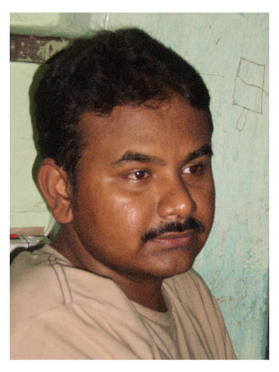
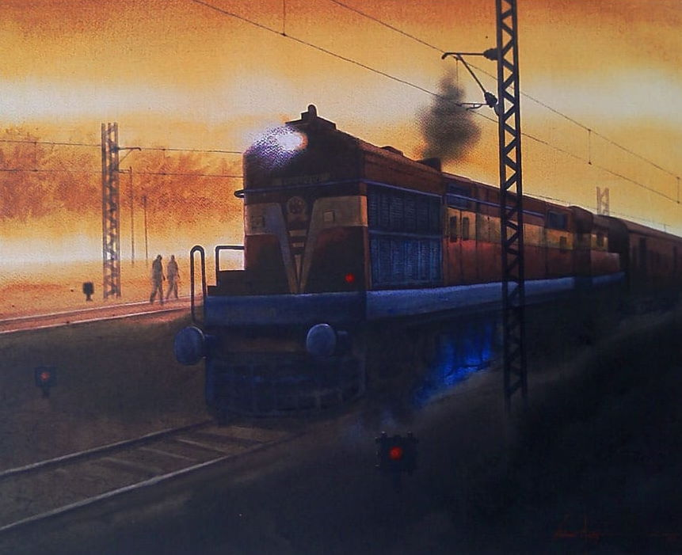
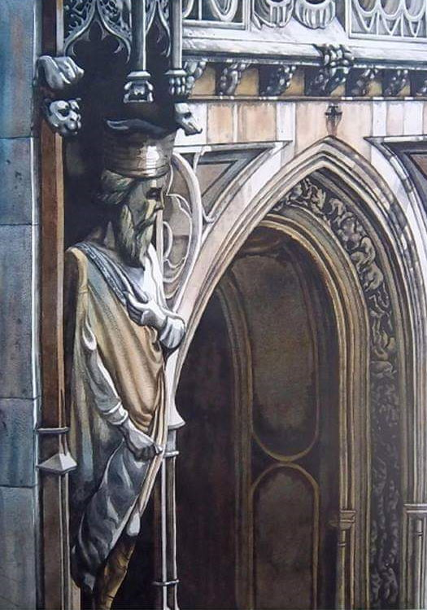
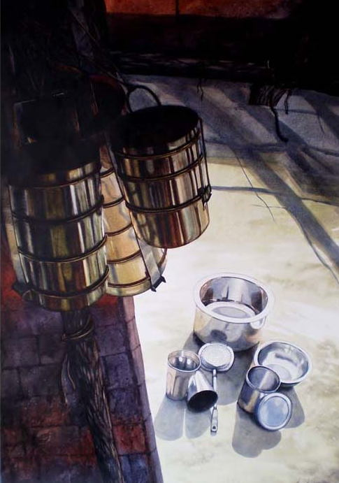
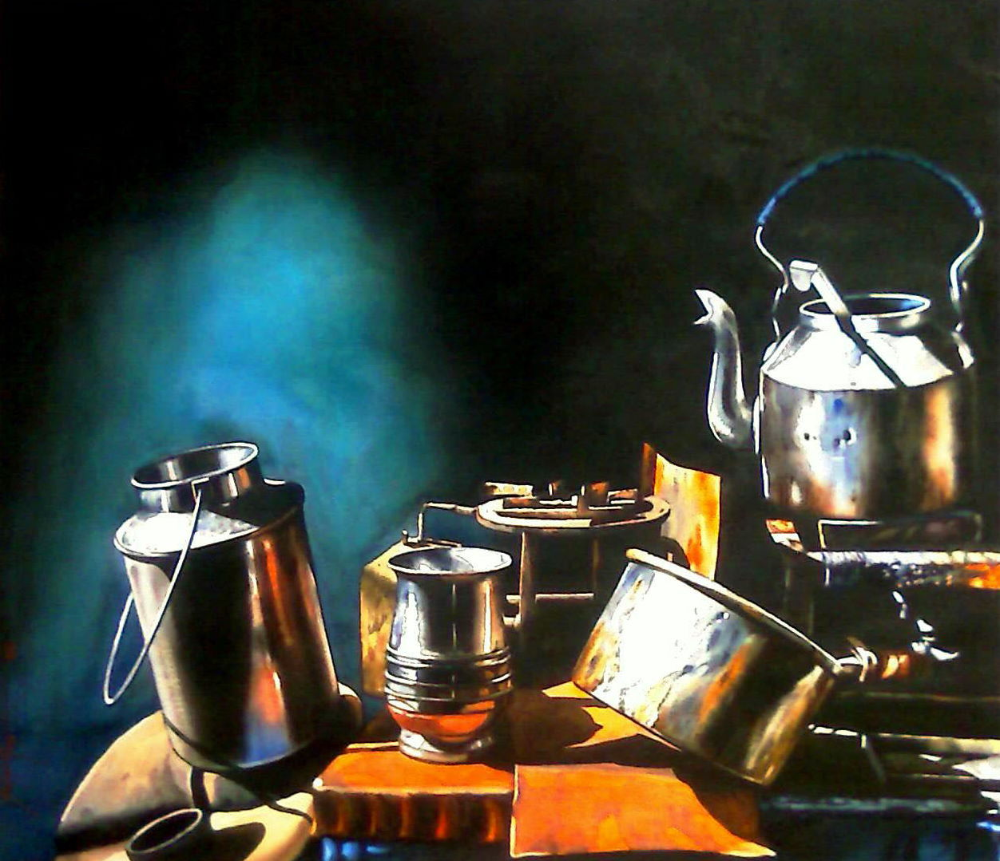
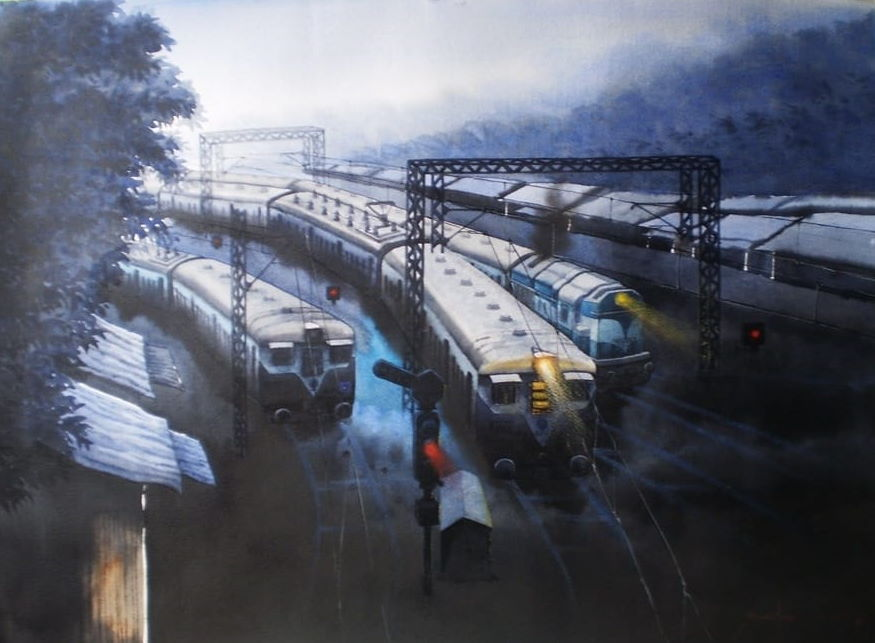
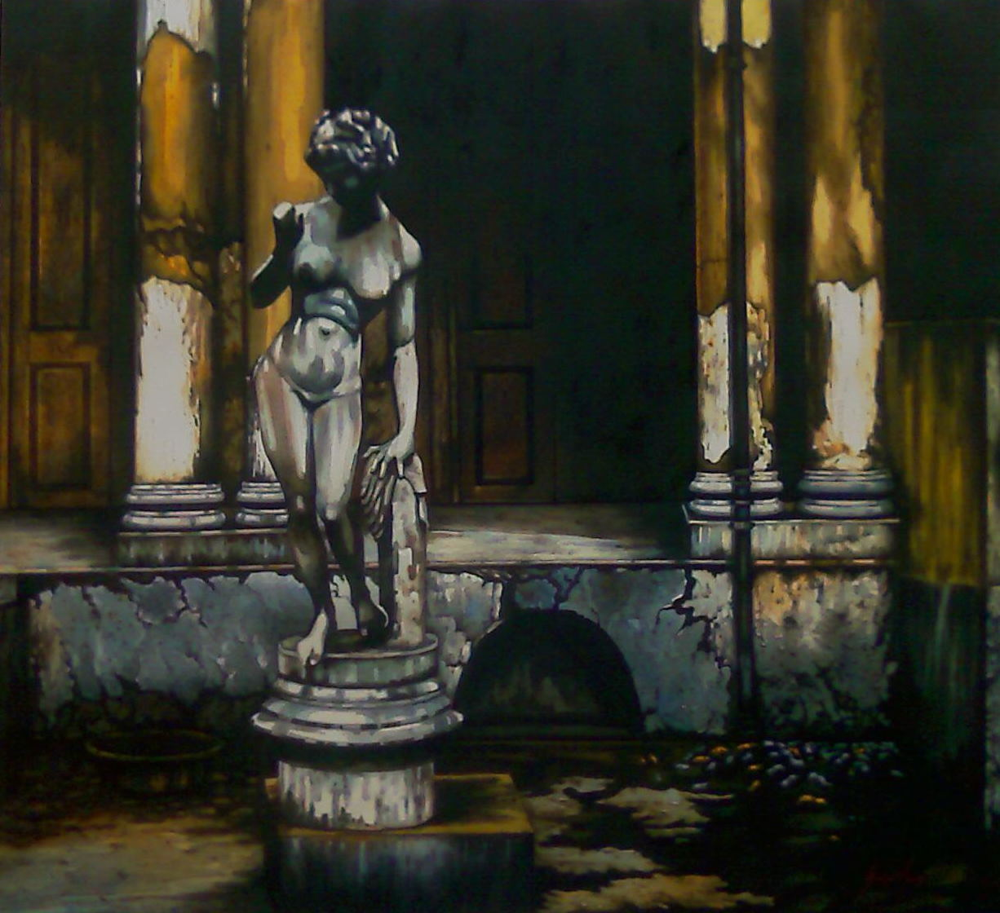

About Me
I graduated from the Indian College of Art & Draftsmanship in Drawing & Painting with First Class in 2007 & have
won the Best Watercolour Award from the Academy of Fine Arts & another from the Camlin Art Foundation. In
watercolours, the beauty lies in the freshness of colours, their transparency & purity, & a slightly unfinished
look , resulting in a natural effect. My watercolours are dramatic and realistic, infusing life in even
commonplace objects & making them look spectacular !

Awards
- Camlin Award (2006)
- Best Water Color Award (Indra Durga Award) from Academy of Fine Art (2007)
- Stipend Award from Academy of Fine Art (2007)
- First place in the Contest on Heritage Commemorating world Heritage week from banglanatok.com (2020)
Art Camps
- Bangalore (2006)
- Kolkata (2008)
Shows
- Group exhibition in Gallery Karma (2007)
- The park, Kolkata organized by Gallery Karma (2007)
- Group exhibition organized by Abstruct at Kamalnayan Bajaj Art Gallery, Mumbai (2007)
- Alliance Françoise de Bangalore (2008)
- Time & Space, Bangalore (2009)
- Lalit kala academy, Chennai (2009)
- Taj Bengal (solo) (2010)
- Artflute Gallery (2011)
- Tejas gallery (solo) (2011)
- Kuwait group show (2014)
- Haring stone street art center, Kolkata (2014)
- Kuwait (2015)
- Chandigarh (2016)
- Kolkata Airport, Sponsored by Hastakshar Art Gallery (2018, 2019)
- Goa Airport, Sponsored by Hastakshar Art Gallery (2017)
- Mumbai Neheru center (2019)
Participated Shows
- The Indian College of arts & draftsmanship (2005)
- The eye Within (2005)
- Camlin(2006)
- Academy of fine arts (2006, 2008, 20011)
- Birla Academy (2013)
Gallery






My Contact
📞 (+91) 9932667056
✉ maitysaikatmaity@gmail.com